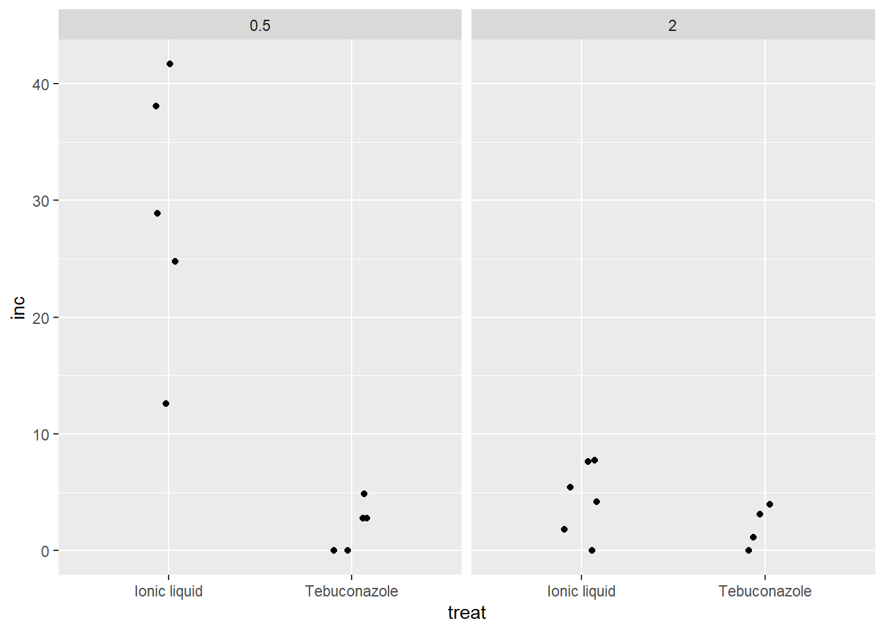

library(tidyverse)
library(readxl)Anova Fatorial
ANOVA - 2 ou mais fatores
Quando se tem dois fatores ou mais, não se tem a opção de usar teste não paramétrico (Kruskal). A função aov() em 1 fator é apenas variável resposta em função do tratamento (resposta ~ tratamento), mas com 2 ou mais o aov() é a resposta ~ do tratamento1*tratamento2 (ex.: resposta em função do fator 1 versus o fator2).
Preparo pré-análise:
Banco de dados utilizado: fungicida-vaso (conjunto de dados do dados diversos). Objeto nomeado como dat.
dat <- read_excel("dados-diversos.xlsx", "fungicida_vaso")Calculo da % do número de espigas com doença. Cria uma nova coluna:
dat2 <- dat |>
mutate(inc = dis_sp / n_sp*100)
dat2 |>
ggplot(aes(x = treat,
y = inc))+
geom_jitter(width = 0.1)+
facet_wrap(~dose)
Gera modelo de anova: trata como dados qualitativos.
m1 <- aov(inc ~treat*dose,
dat = dat2)
summary(m1) Df Sum Sq Mean Sq F value Pr(>F)
treat 1 919.5 919.5 24.31 0.000151 ***
dose 1 920.9 920.9 24.34 0.000150 ***
treat:dose 1 747.7 747.7 19.76 0.000407 ***
Residuals 16 605.3 37.8
---
Signif. codes: 0 '***' 0.001 '**' 0.01 '*' 0.05 '.' 0.1 ' ' 1Checa as premissas e visualiza com DHARMa:
library(performance)
check_normality(m1)Warning: Non-normality of residuals detected (p = 0.018).check_heteroscedasticity(m1)Warning: Heteroscedasticity (non-constant error variance) detected (p < .001).library(DHARMa)
plot(simulateResiduals(m1))
Como está se trabalhando com dados de percentagem,tenta transformar os dados com log. Embora a normalidade pareça anormal, a homogeneidade é mais importante.
m1 <- aov(log(inc + 0.5) ~ treat*dose,
dat = dat2)
summary(m1) Df Sum Sq Mean Sq F value Pr(>F)
treat 1 12.928 12.928 13.980 0.00179 **
dose 1 5.663 5.663 6.124 0.02491 *
treat:dose 1 5.668 5.668 6.129 0.02486 *
Residuals 16 14.796 0.925
---
Signif. codes: 0 '***' 0.001 '**' 0.01 '*' 0.05 '.' 0.1 ' ' 1check_normality(m1)Warning: Non-normality of residuals detected (p = 0.050).check_heteroscedasticity(m1)OK: Error variance appears to be homoscedastic (p = 0.180).plot(simulateResiduals(m1))
Estimando a média dos tratamentos para cada interação: primeiro os tratamentos dentro das doses e depois as dose dentro dos tratamentos.
library(emmeans)
means_m1 <- emmeans(m1, ~ treat | dose,
type = "response")
means_m1dose = 0.5:
treat response SE df lower.CL upper.CL
Ionic liquid 27.05 11.847 16 10.570 68.05
Tebuconazole 1.21 0.737 16 0.188 3.76
dose = 2.0:
treat response SE df lower.CL upper.CL
Ionic liquid 3.10 1.412 16 1.065 7.77
Tebuconazole 1.42 0.925 16 0.194 4.83
Confidence level used: 0.95
Intervals are back-transformed from the log(mu + 0.5) scale library(multcompView)
library(multcomp)
cld(means_m1)dose = 0.5:
treat response SE df lower.CL upper.CL .group
Tebuconazole 1.21 0.737 16 0.188 3.76 1
Ionic liquid 27.05 11.847 16 10.570 68.05 2
dose = 2.0:
treat response SE df lower.CL upper.CL .group
Tebuconazole 1.42 0.925 16 0.194 4.83 1
Ionic liquid 3.10 1.412 16 1.065 7.77 1
Confidence level used: 0.95
Intervals are back-transformed from the log(mu + 0.5) scale
Tests are performed on the log scale
significance level used: alpha = 0.05
NOTE: If two or more means share the same grouping symbol,
then we cannot show them to be different.
But we also did not show them to be the same. #dose dentro dos tratamentos
#means_ml <- emmeans(ml1, ~ dose | trat, type = "response")Vendo o coeficiente de variação:
library(agricolae)
cv.model(m1)[1] 65.04818ANOVA com 3 fatores
Dados sobre a interação entre tipo de armazenamento e umidade.
milho <- read_excel("dados-diversos.xlsx", "armazena")
milho |>
filter(tempo ==8) |>
ggplot(aes(factor(tipo), peso_mil,
color = factor(umidade)))+
geom_jitter(width = 0.1)+
facet_wrap(~ umidade)
Testar a interação entre o tipo de armazenamento e o tempo 8:
milho2 <- milho |>
filter(tempo ==8)
m2 <- aov(peso_mil ~ factor(tipo)*factor(umidade),
data = milho2)
summary(m2) Df Sum Sq Mean Sq F value Pr(>F)
factor(tipo) 1 11215 11215 2375.8 3.64e-15 ***
factor(umidade) 2 42814 21407 4534.8 < 2e-16 ***
factor(tipo):factor(umidade) 2 2329 1165 246.7 1.79e-10 ***
Residuals 12 57 5
---
Signif. codes: 0 '***' 0.001 '**' 0.01 '*' 0.05 '.' 0.1 ' ' 1testanto tipo de inoculação na incidencia de fusarium em milho
milho3 <- read_excel("dados-diversos.xlsx", "milho")
m4 <- aov(yield ~hybrid*method,
data = milho3)
summary(m4) Df Sum Sq Mean Sq F value Pr(>F)
hybrid 5 105876446 21175289 8.312 2.66e-05 ***
method 1 42951 42951 0.017 0.897
hybrid:method 5 10619453 2123891 0.834 0.534
Residuals 36 91709593 2547489
---
Signif. codes: 0 '***' 0.001 '**' 0.01 '*' 0.05 '.' 0.1 ' ' 1check_heteroscedasticity(m4)OK: Error variance appears to be homoscedastic (p = 0.928).plot(simulateResiduals(m4))medias_m4 <- emmeans(m4, ~ hybrid)
medias_m4 hybrid emmean SE df lower.CL upper.CL
30F53 HX 10598 564 36 9453 11742
30F53 YH 9309 564 36 8165 10454
30K64 11018 564 36 9874 12162
30S31H 8652 564 36 7507 9796
30S31YH 8056 564 36 6912 9201
BG7049H 12402 564 36 11257 13546
Results are averaged over the levels of: method
Confidence level used: 0.95 cld(medias_m4) hybrid emmean SE df lower.CL upper.CL .group
30S31YH 8056 564 36 6912 9201 1
30S31H 8652 564 36 7507 9796 12
30F53 YH 9309 564 36 8165 10454 12
30F53 HX 10598 564 36 9453 11742 23
30K64 11018 564 36 9874 12162 23
BG7049H 12402 564 36 11257 13546 3
Results are averaged over the levels of: method
Confidence level used: 0.95
P value adjustment: tukey method for comparing a family of 6 estimates
significance level used: alpha = 0.05
NOTE: If two or more means share the same grouping symbol,
then we cannot show them to be different.
But we also did not show them to be the same. Caso a interação não dê sifnificativa, tira a interação e deixa só o fator que teve significancia (isola o fator).
m5 <- aov(yield ~hybrid, data = milho3)
summary(m5) Df Sum Sq Mean Sq F value Pr(>F)
hybrid 5 105876446 21175289 8.688 1.02e-05 ***
Residuals 42 102371996 2437428
---
Signif. codes: 0 '***' 0.001 '**' 0.01 '*' 0.05 '.' 0.1 ' ' 1m4 <- aov(yield ~hybrid,
data = milho3)
summary(m5) Df Sum Sq Mean Sq F value Pr(>F)
hybrid 5 105876446 21175289 8.688 1.02e-05 ***
Residuals 42 102371996 2437428
---
Signif. codes: 0 '***' 0.001 '**' 0.01 '*' 0.05 '.' 0.1 ' ' 1check_heteroscedasticity(m5)OK: Error variance appears to be homoscedastic (p = 0.763).plot(simulateResiduals(m5))medias_m5 <- emmeans(m5, ~hybrid)
medias_m5 hybrid emmean SE df lower.CL upper.CL
30F53 HX 10598 552 42 9484 11712
30F53 YH 9309 552 42 8195 10423
30K64 11018 552 42 9904 12132
30S31H 8652 552 42 7538 9765
30S31YH 8056 552 42 6942 9170
BG7049H 12402 552 42 11288 13516
Confidence level used: 0.95 cld(medias_m5) hybrid emmean SE df lower.CL upper.CL .group
30S31YH 8056 552 42 6942 9170 1
30S31H 8652 552 42 7538 9765 12
30F53 YH 9309 552 42 8195 10423 123
30F53 HX 10598 552 42 9484 11712 234
30K64 11018 552 42 9904 12132 34
BG7049H 12402 552 42 11288 13516 4
Confidence level used: 0.95
P value adjustment: tukey method for comparing a family of 6 estimates
significance level used: alpha = 0.05
NOTE: If two or more means share the same grouping symbol,
then we cannot show them to be different.
But we also did not show them to be the same. pwpm(medias_m5) 30F53 HX 30F53 YH 30K64 30S31H 30S31YH BG7049H
30F53 HX [10598] 0.5709 0.9942 0.1494 0.0254 0.2125
30F53 YH 1288 [ 9309] 0.2643 0.9576 0.5999 0.0036
30K64 -420 -1709 [11018] 0.0447 0.0059 0.4938
30S31H 1946 658 2366 [ 8652] 0.9723 0.0003
30S31YH 2541 1253 2962 595 [ 8056] <.0001
BG7049H -1804 -3092 -1384 -3750 -4345 [12402]
Row and column labels: hybrid
Upper triangle: P values adjust = "tukey"
Diagonal: [Estimates] (emmean)
Lower triangle: Comparisons (estimate) earlier vs. laterDados não paramétricos com 2 ou mais fatores - Rank
Para dados com um fator, pode-se usar as 3 alternativas citadas na aula 10. Quando se tem 2 fatores, pode-se analisar cada fator separadamente, mas para testar a interação usa-se outra alternativa, o ranck.
fung <- read_excel("dados-diversos.xlsx", "fungicida_vaso")
fung2 <- fung |>
mutate(inc = inf_seeds/n_seeds*100,
rank_inc = rank(inc))
rank_anova <- aov(rank_inc ~treat*dose, data = fung2)
summary(rank_anova) Df Sum Sq Mean Sq F value Pr(>F)
treat 1 220.00 220.00 14.204 0.00168 **
dose 1 105.34 105.34 6.801 0.01904 *
treat:dose 1 80.34 80.34 5.187 0.03684 *
Residuals 16 247.82 15.49
---
Signif. codes: 0 '***' 0.001 '**' 0.01 '*' 0.05 '.' 0.1 ' ' 1Médias do rank: Depois usa o emmeans para ver as médias com o rank.
means_rank <- emmeans(rank_anova, ~treat | dose)
cld(means_rank)dose = 0.5:
treat emmean SE df lower.CL upper.CL .group
Tebuconazole 6.90 1.76 16 3.17 10.6 1
Ionic liquid 18.00 1.76 16 14.27 21.7 2
dose = 2.0:
treat emmean SE df lower.CL upper.CL .group
Tebuconazole 6.75 1.97 16 2.58 10.9 1
Ionic liquid 9.75 1.61 16 6.34 13.2 1
Confidence level used: 0.95
significance level used: alpha = 0.05
NOTE: If two or more means share the same grouping symbol,
then we cannot show them to be different.
But we also did not show them to be the same. Na tabela coloca os dados originais com os dados rankeados.